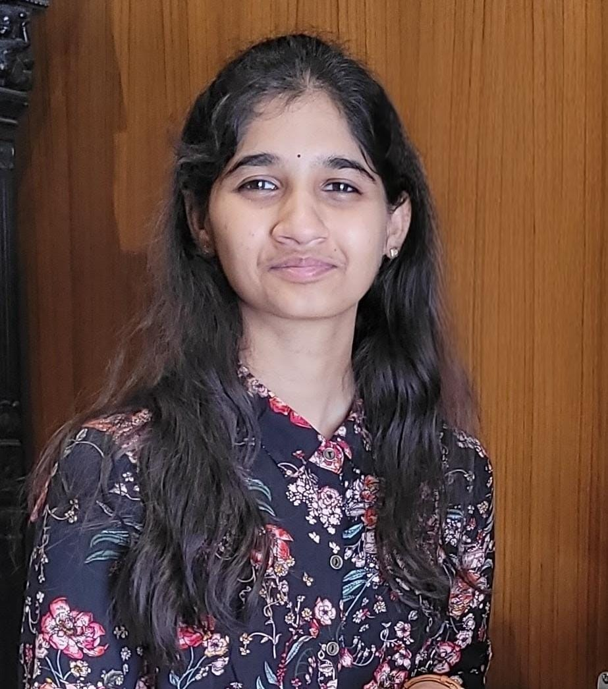

B.Tech Computer Science Engineering student with strong interests in Software Development, Data Structures & Algorithms, Cloud Computing, and Problem Solving. Passionate about building impactful technology solutions and continuously learning emerging technologies.
Get In Touch
I am a third-year Computer Science Engineering student at Sri Venkateswara College of Engineering, Tirupati. My interests include Software Development, Cloud Computing, Data Structures, Algorithms, and Web Technologies.
Through hackathons, technical events, certifications, and project-based learning, I continuously improve my technical expertise and teamwork skills while preparing for a successful career in the IT industry.
Sri Venkateswara College of Engineering, Tirupati
2023 – 2027 (Pursuing)
CGPA: 9.35 / 10
Sri Chaitanya Junior College, Tirupati
Percentage: 96.7%
Sri Chaitanya Techno School
GPA: 10 / 10
A Data Structures & Algorithms based project for managing library operations, book records, and issue-return tracking.
View ProjectA DSA-based inventory application for managing products, stock levels, and inventory records efficiently.
View ProjectResponsive portfolio website showcasing education, skills, projects, certifications, and achievements.
Source CodeI am always interested in discussing software development, cloud technologies, internships, research opportunities, and collaborative projects.
Email: mahathireddy0212@gmail.com
LinkedIn: Connect with me
GitHub: github.com/SavarniReddy